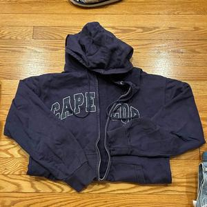
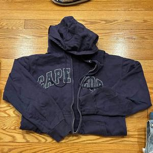
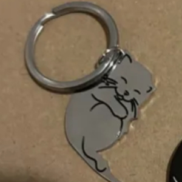
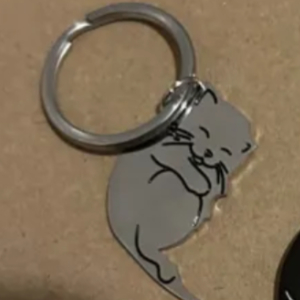
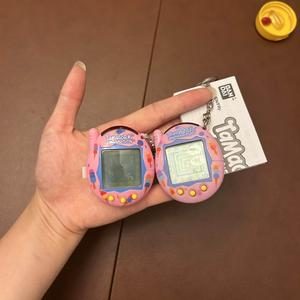
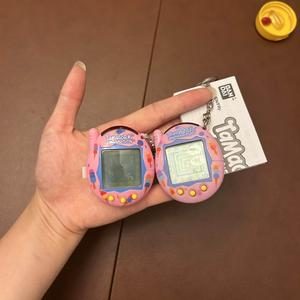

With the start of the Lunar New Year on January 29th, families traditionally clean their home to remove bad luck and begin the start of a new year– including my own family. After moving away for college, I've noticed I haven't followed this tradition much, a mix of college laziness and timing: after all, the semester has just started and my room would still be (pretty) in order. This year was different– I've just returned from a semester abroad, and had crammed all my things together to rush to college without ever really looking through what I brought! I thought it'd be a good time to do my own impromptu spring cleaning, as a way to bring back a hopeful tradition on spring cleaning as I prepare to move out of college, into an apartment of my own one day.
I've always been a bit of a sentimental hoarder, so this becomes a sweet little project where I'm able to reflect on my own changes and needs with time. I thought it'd make a more intriguing topic, seeing as all my trash I'm picking out this week holds more sentimental value to me than usual. Being able to let go of these small and pretty insignificant objects while recording it gives me a good way to look back on myself.
This week's disposal activity holds many more items of sentimental value as compared to previous weeks that are more of a reflection of my daily trash. Since it's a spring cleaning, these items took me a lot more thought to throw out not, whether it was recorded for this project or not. My view of the project in this week feels much more personal, and also made me rethink how much I hold onto even if I don't need them anymore.
Some surprises I faced was that I was more reluctant to get rid of clothes even though I knew I would never wear them again. I usually bring too many clothes to college because I always think I'll maybe wear them again, but even with that in mind, I found myself still attached to clothes that either don't fit, aren't items I would still wear, or are torn. I always think maybe I could repurpose my old clothes or cut them up for projects but still never find myself doing that. I was surprised by some of the items I chose to still keep, and also how it felt easier getting rid of some clothes when I thought about being able to donate them to a thrift store or pass them down. I split my categories into makeup, clothes, and trinkets.
My first category is makeup. The first product is the green-gold Moroccoan clay pot lipstick I got earlier this year. I realized the product doesn't work like how I'd like (and has also broken down enough I can't pass it down). I kept it at first as a souvenir from my trip, but realized I really just keep it in my drawer and don't love its look if there's no function. My second item is an old Elf Concealer I bought in high school. The picture shows it's clearly expired, but I always put off throwing it out because I felt attached to how I used to use it for special occasions or going out with friends. Another is my favorite Colorpop Highlighter that I finished to the pan. Once I got a replacement it was an easier decision to throw out, but I also put it off until I did.
Clothes-wise, I added in a Beret, a white dress, and a hoodie from Cape Cod. The beret I just don't like, and the white dress no longer fits me anymore. The hoodie holds most memories for me, since I got it on a camping trip with my family. The white dress was an option I had for high school graduation, but I ended up disliking it and not wearing it. The beret I got when I was trying to get more accessories, but realized I did not like wearing it.
Lastly, trinkets include a broken Tamagotchi Connect, my old driver's license, and Kirkland Coconut Water. Pictured on the right is my old version, which I was attached to since my sister and I grew up playing on these. Recently there was a re-release of the line, where I bought my sister and I a new one and I finally threw the old one away. Another is my driver's license, which I recently got rid of since I finally got my horizontal license.
 

 


 


| Item | Contact | Country |
|---|---|---|
| Alfreds Futterkiste | Maria Anders | Germany |
| Centro comercial Moctezuma | Francisco Chang | Mexico |
My item of the week is my Tamagotchi. I selected this item since it has the most sentimental value for me, since I used to play it a lot with my sister and connect mine with her. We both have 2008 Tamagotchi Connects, and have spent a lot of car rides and days at home with my sister playing with our pets. Now that we are older, I was able to find the re-release to gift my sister and I both versions of Connect pets, which is fun to keep around.
Tamagotchis were developed in Japan in 1996 as a handheld digital pet. There are different designs for the pets, as well as a Tamaverse for online pets. My Connect I have was the Version 5, and the pink ice cream version of it.
Thank you for reading my blog, on my week within the Lunar New Year. I hope you have enjoyed my items, I have definitely taken my own time to understand and reflect on these items I have thrown out.
xxxxxxxxxxxxxwith-photograph, name, 150-2000 words of a bioxxxxxxxxxxxxxxx